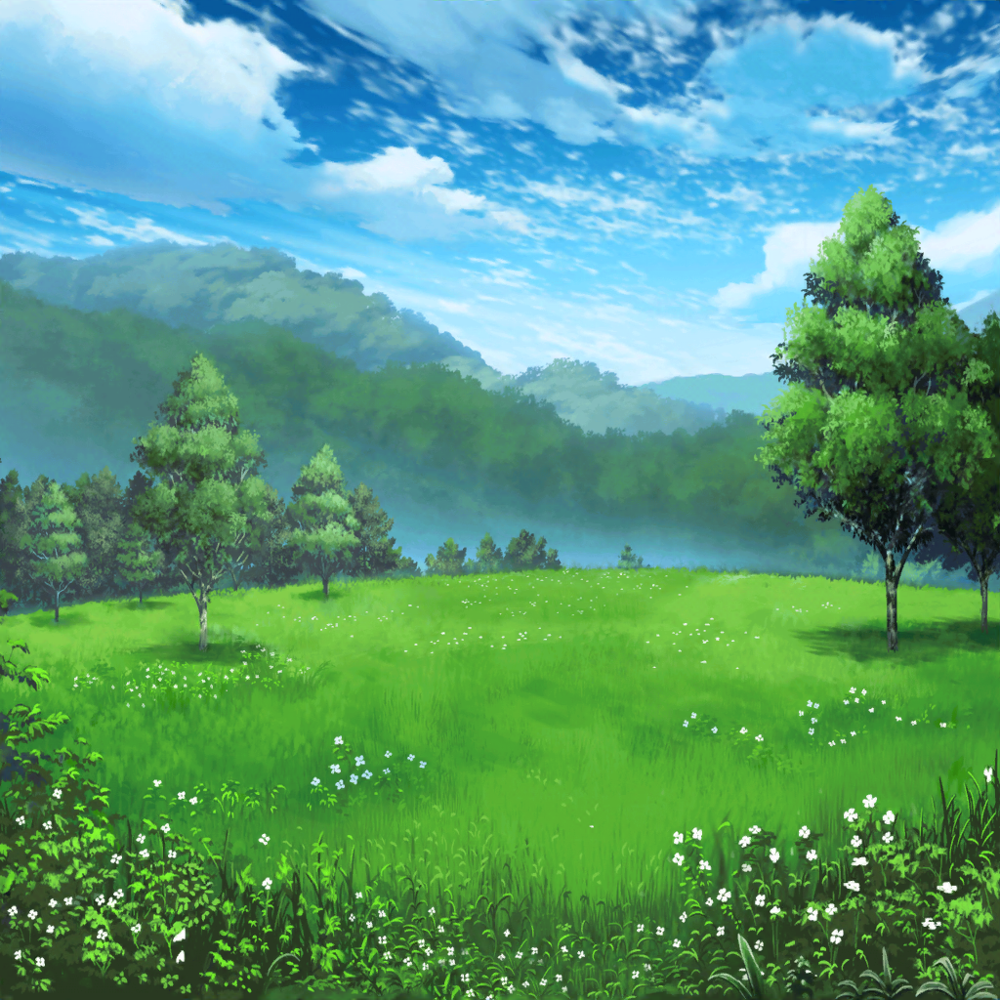

山の中腹
香澄
うわぁ～！
緑がいっぱい！ 空気も美味しいなあ〜！
すーはー、すーはー
つぐみ
２時間ぐらいで、こんなに自然がいっぱいの場所に
来られるなんて知らなかったよ
香澄
空を邪魔するものが何もないから、
い～っぱい星が見られそうだね！
蘭
つぐみ、香澄、ツアーの人たち行っちゃったよ。
のんびりしてないで、あたしたちも行こう
つぐみ
あ、蘭ちゃん、待って～！
香澄
１泊２日の天体観測ツアー……
ん～！ 楽しくなりそう！

数時間後
香澄
満腹～！
夕ご飯、おいしかったね！
つぐみ
うん、すっごく！
山菜ソテー最高だった！
蘭
安いツアーだからあんまり期待してなかったけど……
けっこういい感じだね
香澄
ペンションの部屋もキレイだったしね！
これは星空もきっとすっごいのが見られちゃうよ！
蘭
ペンションと星空はあんまり関係ない気がするけど……
つぐみ
でも、香澄ちゃんの気持ち、わかる！
今だって、星がすっごくよく見えるし
香澄
もっと夜遅くなれば、今以上にたくさん見られるよね！
蘭
じゃあ、まだペンションにいればよかったのに。
なんで外出たの？
香澄
え～、だってせっかくだから外、出たくない？
天体観測前の散歩だよ、散歩！
蘭
散歩……なのに、ギターを持ってきたわけは？
香澄
なんとなく！
つぐみ
あはは、なんとなく……
香澄
夜の森を散歩してたら、テンション上がって、
弾きたくなっちゃうかもしれないでしょ！？
蘭
いや、弾かないと思う
香澄
弾きたくなっちゃうよ！
今だって星とセッションしたいぐらいだもん！
香澄
ね、蘭ちゃん、つぐ！
歌おう！
香澄
それ～！！
蘭
ちょ、香澄、騒がしいってっ。
早くギターしまいなよ
？？？
あら？ 香澄と蘭じゃない！
こころ
ギターの音が聞こえたと思ったら……偶然ね！
こんなところで会うなんて！
つぐみ
こころちゃん！？
と……日菜先輩！？
日菜
あ、つぐちゃんだー
香澄ちゃんと蘭ちゃんも。
なんで、ここにいるの？
香澄
私達、星を見に来たんです！
天体観測ツアーで！
日菜
あたし達は星探しにきたんだー。
ね、こころちゃん！
こころ
そうなのよ！ 人が住めるような星を探すの！
それで、あたしと日菜がその星の王様になるのよ！
つぐみ
ひ、人が住めそうな星……？ 王様……？
蘭
……なんか、ヤバそう……
香澄
わあっ、楽しそう〜！！
私も星、探したいっ！
日菜
香澄ちゃんも一緒に探そうよ！
天体観測ついでにきっと見つかるって
蘭
そんな簡単に見つからないと思いますよ……
つぐみ
ま、まあまあ、蘭ちゃん
こころ
でも、まだあまり星が出ていないのよね
日菜
あたし達、山の上にあるこころちゃんの別荘に泊まる
予定だからさ、香澄ちゃん達もそっちに来なよ！
香澄
行きたいです！
こころん、お邪魔するね！